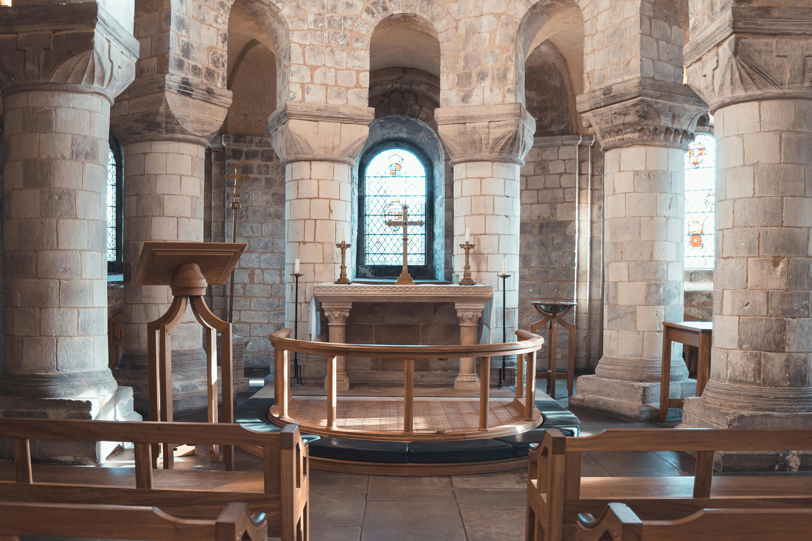

What is the Tower of London?
The Tower of London is one of the world's most famous fortresses with many tales to uncover within the ancient walls.

Explore the importance of the Crown Jewels to the British monarchy and the role the Tower plays in protecting these treasures. The gleaming objects include the Coronation Regalia from the Coronation Spoon to St Edward's Crown. which have been used in the coronation ceremonies of monarchs for centuries, including that of King Charles III and Queen Camilla in 2023.
What was the Tower of London used for?
Find out the story behind the Tower of London. Built as a fortress in the 1070s, it was home to many monarchs for more than 500 years.
In 1204, the Tower also hosted the royal menagerie for 600 years, providing housing for many exotic animals.
It might surprise you, but the Tower even served as a Royal Mint from the 13th to 18th century and royals kept precious possessions as well as arms and armour there.
The White Tower, also called Bloody Tower, served as a prison for more than 800 years. Marked by extreme political and religious unrest in the 1500s and 1600s, the Tower was well known for using torture on its inmates. The last execution in the Tower was on 15 August 1941.